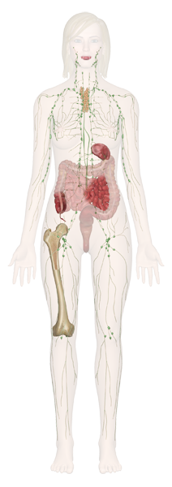

Cervical Nodes
The cervical nodes are one of the six major locations of lymph nodes. They are grouped along the lower border of the jaw, in front of and behind the ears, and deep in the neck along the larger blood vessels. They drain the skin of the scalp, face, tissues of the nasal cavity, and the pharynx. All lymph nodes have the primary function of the production of lymphocytes, which help defend the body against microorganisms and against harmful foreign particles and debris from lymph before it is returned to the bloodstream.
Immune Systems of the Upper Torso
The primary structures of the lymphatic and immune systems in the upper abdomen and chest include the axillary nodes, which are found under the arms and serve both the abdomen and the arms. The upper abdomen is also riddled with a number of smaller lymph nodes. The vertebrae, ribs, and the shoulder blades are also important components of the immune system, as their red marrow produces large quantities of white blood cell. The lymphatic system works closely with the immune system: lymph nodes trap pathogens so that antibodies can attack them; the byproducts of this attack (dead bacteria or viral particles and dead or damaged antibodies and white blood cells) can then be flushed out of the body along with the lymph fluid. This prevents excessive buildup in the body of the poisonous products of cellular decay.
Peyer's Patches
Peyer's patches (or Peyer patches) are round or ovoid bundles of lymphatic tissue made up of unencapsulated lymphatic cells that protect the mucous membranes of the small intestines (the ileum) from infection. While the complete role and function of these mucosal-associated lymphoid tissues is uncertain, they contain lymphocytes such as T cells and B cells so that when an infection occurs, the Peyer patches can protect the interior of the intestine. Peyer's patches also can mitigate the immune response to prevent intense side effects that may damage the intestinal wall.
Immune and Lymphatic Systems of the Leg and Foot
The primary structures of the lymphatic and immune systems in the lower extremities are the lymph vessels. The large bones of the leg are also important, as these contain bone marrow that produces a large number of lymphocytes.
The lymphatic system works closely with the immune system. Lymph nodes trap pathogens so that antibodies can attack them. The byproducts of this attack (dead bacteria or viral particles and dead or damaged antibodies and white blood cells) can then be flushed out of the body along with the lymph fluid. This prevents excessive buildup in the body of the poisonous products of cellular decay.